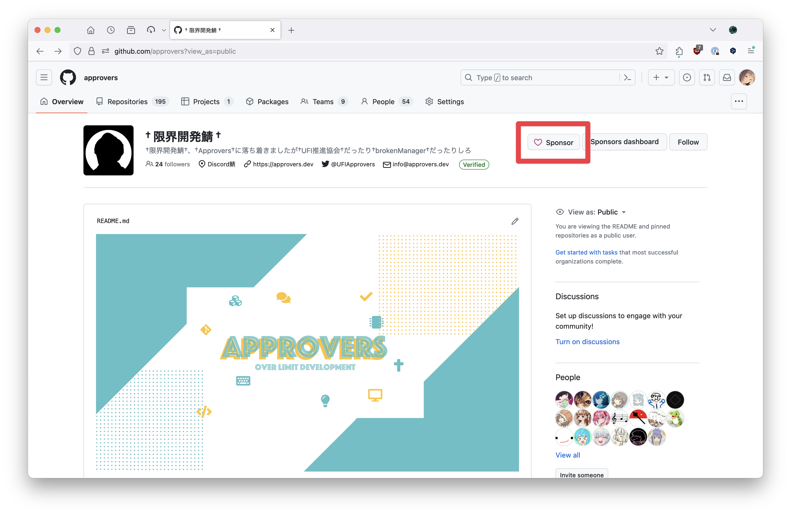
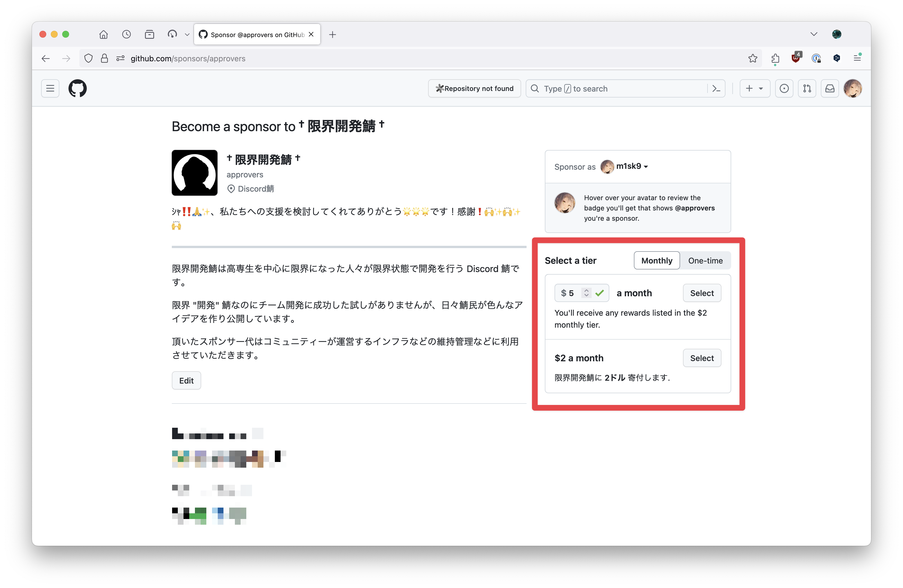

プレミアムアクセス
ichiyoAI が使用するモデルは, すべて API を利用しています. それらのモデルは無料で利用しているわけではなく限界開発鯖の GitHub Sponsors 限界税 からお金を出して契約しています.
ichiyoAI では一部のモデルにおいて 限界税 を納税したユーザーのみがアクセスできる プレミアムアクセス を提供しています.
注意: 限界税を納税しなくても ichiyoAI の全機能 (GPT-3.5, Gemini, DALL-E 2) は利用できます.
利用できるモデル一覧
- GPT-4
- DALL-E 3
- Gemini Ultra
モデルの比較
モデル を参照してください.
納税方法
納税の方法は大きく分けて2つあります.
- GitHub Sponsors から納税する
- 限界開発鯖 Discord にサーバーブーストする
本来限界税は 1 のみが正式な方法ですが, ichiyoAI は 2 の方法にも対応しています. Containers2 を利用するには 1 での納税が必須です.
GitHub Sponsors から納税する
- 限界開発鯖 の GitHub Sponsors ページ にアクセスします.

Monthly(毎月) またはOne-time(一度きり) を選択し, $2 以上の金額を入力します.

Selectをクリックし, 画面の指示に従います.- 限界開発鯖 Discord を開き,
Linked Role(連携ロール) をクリックし, Sponsor App と Discord アカウントを連携する. - 自分のロールに
Sponsorが追加されていることを確認します. 追加されているのを確認したら@m1sk9(める) にメンションして納税者ロールをもらってください.
限界開発鯖 Discord にサーバーブーストする
Discord におけるサーバーブーストの方法は こちら から確認できます.